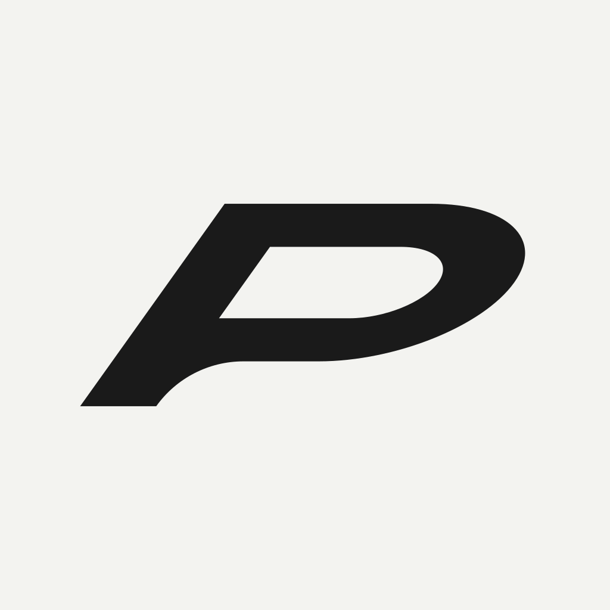

Principal sobre claro
Patio / logo oficial · tablero de uso
El logo existente, bien aplicado.
Este tablero documenta usos del asset actual. No propone un símbolo nuevo, no redibuja el mark y no modifica la app.
Los wordmarks negro y blanco tienen el mismo archivo maestro raster. Los símbolos cuadrados se muestran como candidatos de aplicación nativa para confirmar visualmente.
Invertido sobre oscuro
Sobre neutro Patio
Sobre naranja de marca

Símbolo cuadrado / aplicaciones nativas
Símbolo en oscuro / monocromo
Checklist de aprobación
- Confirmar wordmark maestro.
- Confirmar símbolo maestro para app icon y favicon.
- Definir área de seguridad con el asset real.
- Validar tamaños de 16, 24, 32, 48 y 64 px.
- Descartar cualquier uso con bajo contraste, deformación o efectos.